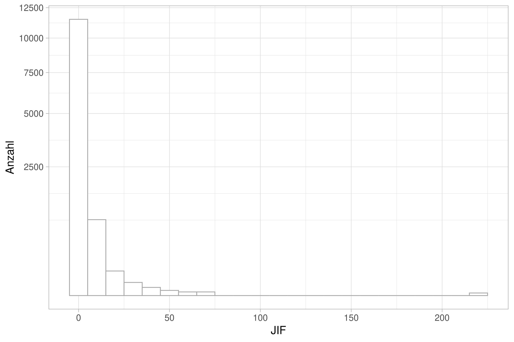

Publikationsprozess
Organisatorisches
Semesterplan
| Sitzung | Datum | Sitzungstitel |
|---|---|---|
| 1 | 02.11.2020 | Warum wissenschaftliche Psychologie |
| 2 | 28.11.2020 29.11.2020 | Hypothesen und der Prozess der Hypothesenprüfung |
| 3 | 28.11.2020 29.11.2020 | Experimentelles Vorgehen |
| 4 | 28.11.2020 29.11.2020 | Literaturrecherche |
| 5 | 28.11.2020 29.11.2020 | Operationalisieren und Messen |
| 6 | 12.12.2020 13.12.2020 | Experimentelle Versuchspläne |
| 7 | 12.12.2020 13.12.2020 | Störvariablen im Experiment |
| 8 | 12.12.2020 13.12.2020 | Nicht-experimentelle Versuchspläne |
| 9 | 12.12.2020 13.12.2020 | Material und Stichprobe |
| 10 | 23.1.2021 24.1.2021 | Auswertung, Darstellung und Interpretation |
| 11 | 23.1.2021 24.1.2021 | Ethische Probleme im Versuch |
| 12 | 23.1.2021 24.1.2021 | Publikationsprozess |
| 13 | wird noch bekannt gegeben | Vorstellung der Gruppenarbeiten |
| 14 | wird noch bekannt gegeben | Klausurvorbereitung |
Wiederholung
Publikationen
Die Rolle von Publikationen
im Allgemeinen
- Sammlung von Wissen
- Weiterentwicklung von Theorien und Methoden
- Bereitstellung von Wissen für die (Fach-)Öffentlichkeit
im Wissenschaftsbetrieb
- Akademische Grade (Bachelor, Master, Diplom, Doktor, Habilitation)
- Stellen: Publish or parish, Bewerbungen
- Forschungsanträge
Wie und wo publiziert man?
- im WOS allein sind 24.694 peer-reviewed journals aus verschiedenen Fachbereichen gelistet
- Prestige variiert stark zwischen Journals (unterschiedliche rejection rates)
- High impact oder top tier journals : Science, Nature,… (u.a., je nach Fachbereich)
Journal-Impact-Faktor?
- Durchschnittliche Zitationen von Artikeln eines Journals in anderen Artikeln
- In der Praxis oft Kriterium zur Beurteilung der Publikationsleistung
- So nicht intendiert
| Rank | Full Journal Title | JIF |
|---|---|---|
| 1 | A CANCER JOURNAL FOR CLINICIANS | 223.679 |
| 2 | Nature Reviews Materials | 74.449 |
| 3 | NEW ENGLAND JOURNAL OF MEDICINE | 70.670 |
| 4 | LANCET | 59.102 |
| 5 | NATURE REVIEWS DRUG DISCOVERY | 57.618 |
| 6 | CHEMICAL REVIEWS | 54.301 |
| 7 | Nature Energy | 54.000 |
| 8 | NATURE REVIEWS CANCER | 51.848 |
| 9 | JOURNAL OF THE AMERICAN MEDICAL ASSOCIATION | 51.273 |
| 10 | NATURE REVIEWS IMMUNOLOGY | 44.019 |
| 11 | NATURE REVIEWS GENETICS | 43.704 |
| 12 | NATURE REVIEWS MOLECULAR CELL BIOLOGY | 43.351 |
| 13 | NATURE | 43.070 |
| 14 | SCIENCE | 41.037 |
| 15 | CHEMICAL SOCIETY REVIEWS | 40.443 |

Der Publikationsprozess
Gesamtdauer: 4 Wochen - 2 Jahre; Typisch um die 6 Monate
Schreiben des Artikels (paper), Diskussion mit Koautoren/Fachkollegen
Einreichung (submission) des Artikels bei einer Fachzeitschrift (journal)
Begutachtung durch Herausgeber (editorial review)
- desk rejection oder peer-review
Anonyme Begutachtung durch (1-5, meist 2-3) Fachkollegen (peer-review)
Entscheidung des Herausgebers auf Basis der Gutachten (editorial decision)
- accept without changes
- minor revisions
- major revisions
- reject (resubmission allowed)
- reject (no resubmission allowed)
Antwort (rebuttal, point-by-point reply) auf Gutachten (reviews):
- Argumentation, ggf. Änderungen am Manuskript (revision), Textänderungen, Analysen oder Abbildungen, ggf. Nacherhebung von Kontrollbedingungen
Wiedereinreichung des Manuskripts (resubmission)
Publikation (erst online, dann ggf. Print; inzwischen z.T. auch nur online)
In seriösen Journalen werden die zur Publikation eingereichten Manuskripte von einer Gruppe von dem gleichen Wissenschaftsbereich angehörigen Wissenschaftlern überprüft und kritisiert. Dieses (nicht bezahlte und meist anonyme) Instrument der Qualitätssicherung der Überprüfung durch die Bezugsgruppe (Peer Review) stellt eine zentrale Säule des Wissenschaftsbetriebs dar.
Zu diesem Prozess und schwarzen Schafen lässt sich dieses Video von Dr. Nguyen-Kim empfehlen.
Gliederung einer Publikation
Übungsaufgabe 1
Welche (Art von) Angaben finden Sie in welchem Teil einer Publikation?
Was schreibt man wo hin?
Rahmen:
Titel
Autoren
Affiliations
Keywords
Vorwort, Finanzierungserklärungen und Danksagung
Erklärung zur Autorenschaft
Autorenliste
Erstautor (first author)
Zweitautor (second author)
Mittlere(r) Autor(en) (middle author(s))
Zweitletztautor (second senior author)
Letztautor (senior author)
shared authorships: Haben zwei Autoren einen gleichwertigen Beitrag geleistet, können Sie sich eine Position teilen (i.d.R. Erstautorenschaft)
author contributions: Manche Journals verlangen detaillierte Angaben darüber welcher Autor welchen Beitrag geleistet hat: designed research, performed research, contributed unpublished reagents/analytic tools, analyzed data, wrote the paper
Standardgliederung:
- Zusammenfassung (Abstract)
- Einleitung (Introduction)
- Methoden (Methods)
- Ergebnisse (Results)
- Diskussion (Discussion)
- Schlussfolgerungen (Conclusions)
- Literatur (References)
- Anhang (Supplements)
1. Abstract (Zusammenfassung)
- Kurzform des Artikels
- Je nach Journal unterschiedliche Länge gefordert(150-300 Wörter)
- Gliederung:
- Einleitung (1-2 kurze Sätze)
- Fragestellung (1 Satz)
- Methoden (3 Sätze)
- Ergebnisse (3 Sätze)
- Diskussion (2 Sätze)
300 Worte

2. Einleitung
Kurze Einführung in das Thema
Worum geht es?
Warum ist das interessant?
Definitionen, Begriffe
Diskussion bisheriger Studien / Theorien
Herausarbeiten offener / kontroverser Fragen
Ableitung der Fragestellung
(Skizze der Studie)
(Inhaltliche Hypothesen)
3. Methoden
Probanden (Participants)
(Geräte (Apparatus))
Material (Material)
Versuchsplan (Design)
Ablauf (Procedure)
Auswertung
(Preprocessing, Data Aggregation)
Statistische Auswertung
4. Ergebnisse
Manipulationsüberprüfung (Manipulation Check)
Hauptergebnisse (Main Results)
Zusatzanalysen (Explorative Analysis)
Abbildungen und Tabellen
5. Diskussion (& 6. Schlussfolgerung)
Rekapitulation
- Ganz kurze Zusammenfassung der Ergebnisse
- Sind die Hypothesen angenommen worden?
Integration
- Passen die Ergebnisse zu anderen Studien oder widersprechen sie ihnen?
- Wie lassen sich die Ergebnisse im theoretischen Rahmen erklären?
- Welche Alternativerklärungen gibt es? Pro / Kontra
Perspektive
- Welche Grenzen hat die Studie?
- Was ist die take-home-message der Studie?
- Wo kann weiter gemacht werden?
7. Literatur
Grundsätzliches
Alle Literaturangaben im Text finden sich auch im Literaturverzeichnis.
Im Literaturverzeichnis finden sich nur Literaturangaben aus dem Text.
Literaturangaben müssen nach der vom Journal geforderten Konvention (bei uns die Richtlinien der DGPS) formatiert und sortiert sein.
Ethik im Wissenschaftsbetrieb
„gute wissenschaftliche Praxis“ vs. wissenschaftliches Fehlverhalten
Hochschulrektorenkonferenz definiert allgemein: „Wissenschaftliches Fehlverhalten liegt vor, wenn in einem wissenschaftserheblichen Zusammenhang bewusst oder grob fahrlässig Falschangaben gemacht werden, geistiges Eigentum anderer verletzt oder sonst wie deren Forschungstätigkeit beeinträchtigt wird. Entscheidend sind jeweils die Umstände des Einzelfalles.“
Wissenschaftliches Fehlverhalten
Falschangaben (fraud)
das Erfinden von Daten (forging)
das Verfälschen von Daten (trimming, cooking, cherry picking)
Manipulation von Darstellungen oder Abbildungen
Verletzung geistigen Eigentums
die unbefugte Verwertung unter Anmaßung der Autorschaft (Plagiat)
Ideendiebstahl
die Verfälschung des Inhalts
anderes Fehlverhalten
nicht-gerechtfertigte Inanspruchnahme der (Mit-)Autorenschaft
Sabotage von Forschungstätigkeit
Beseitigung von Primärdaten
Eine Mitverantwortung für Fehlverhalten kann sich unter anderem ergeben aus
aktiver Beteiligung am Fehlverhalten anderer
Mitwissen um Fälschungen durch andere
Mitautorschaft an fälschungsbehafteten Veröffentlichungen
grober Vernachlässigung der Aufsichtspflicht
Ein paar weitere Beispiele:
Die Impf-Diskussion und die Autismus-Unterstellung im Video von Dr. Nguyen-Kim oder im größeren Kontext und populärwissenschaftlicher im Video von Last Week Tonight mit John Oliver
Die “Imputationen” von Wittchen bei Spektrum
Der Fall Diedrik Stapel bei Science Mag
Replikationsproblem
Betrug vs. Replikationsproblem
Nicht alle nicht-replizierbaren Studienergebnisse gehen auf Wissenschaftsbetrug (scientific fraud) zurück!
Manchmal auch „nur“ ungenügend abgesicherte Befunde (Zufallssignifikanzen, Effekte von unbekannten unkontrollierten Störvariablen, kleine aber bedeutsame Abweichungen in der Versuchsdurchführung, etc.)
Problem: sogar erfolgreiche Replikationen lassen sich schwerer publizieren als die Erstbeschreibung eines Phänomens; misslungene Replikationen erst recht
publication bias
Publikationsbias (Publication bias; file drawer problem, “Schubladenproblem”): „langweilige“, negative (nicht-signifikante) Ergebnisse lassen sich viel schwerer publizieren als „spannende“, positive (signifikante) Ergebnisse
Auswirkung: aufgrund fälschlich erhöhter Häufigkeit positiver Ergebnisse kann z.B. die Wirksamkeit einer Therapie überschätzt werden
beeinflusst auch Metaanalysen welche die Effektstärke studienübergreifend auf Basis bisher publizierter Daten untersuchen
Gründe wissenschaftlichen Fehlverhaltens
Bevorzugte Publikation spektakulärer, kontraintuitiver Ergebnisse \(\rightarrow\) Anreiz, einfache, schnelle, kleine Studien zu produzieren („salami science“)
Ökonomischer Druck bei wissenschaftlicher Karriere \(\rightarrow\) Publikationen und Drittmittel notwendig, kaum Festanstellungen
Zunahme zurückgezogener Artikel
“Science’s ultimate post-publication punishment: retraction, the official declaration that a paper is so flawed that it must be withdrawn from the literature.“
Abb. 12: Aus Van Noorden (2011).
Abb. 13: Neil Saunders: http://pmretract.heroku.com/byyear